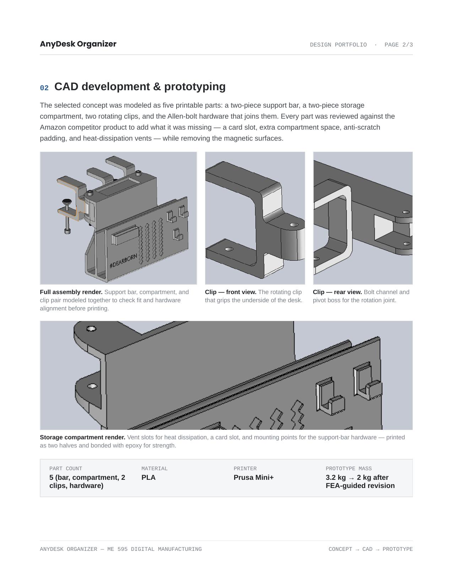
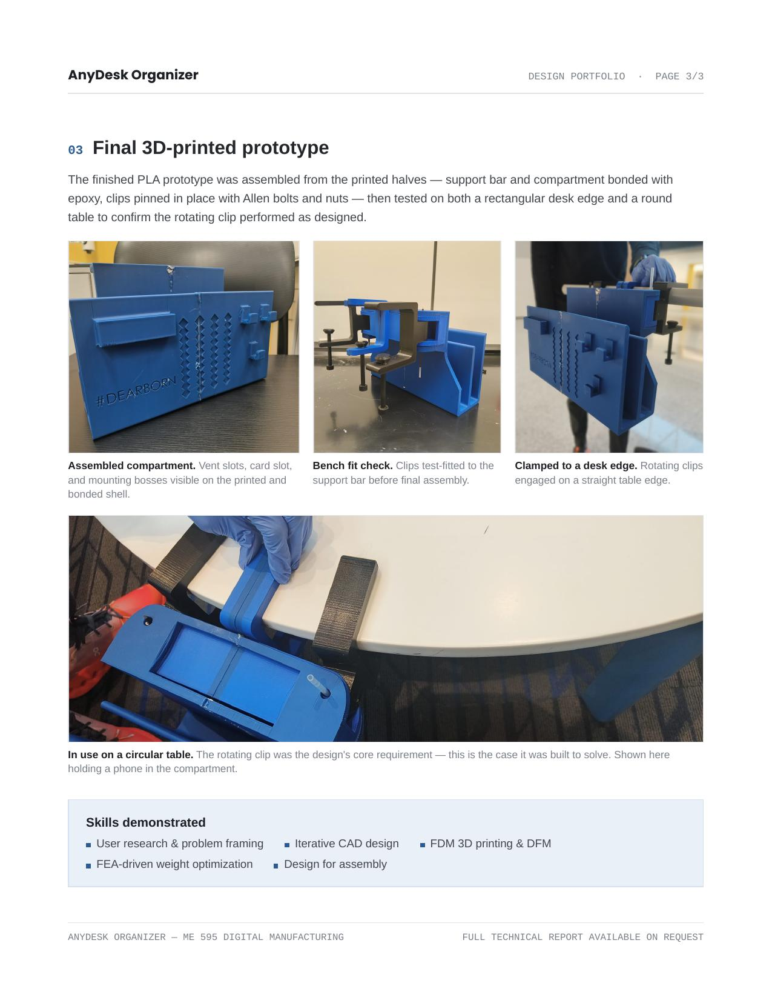

I am Denzil Rivaldo Amalraj, a mechanical design engineer specializing in CAD, fixture tooling, design-for-manufacturing, iterative prototyping, and 3D printing.
My work sits at the intersection of mechanical design and manufacturable reality. I create precise assemblies, fixtures, tooling components, and prototypes—from the first CAD concept through tolerance refinement, fabrication documentation, and physical fit checks. I bring automotive fixture experience together with hands-on additive manufacturing and FEA-driven design decisions.
Current focusMechanical & product design
Design approachIterate, test, refine, build
Industry experienceAutomotive BIW fixtures & assembly stations
Based inDearborn, Michigan
02 / SELECTED WORK
Designed to be built.
PRECISION HARDWARE
Magnetic Shaft Coupling
A tool-free, hand-tightened magnetic coupling developed to transmit rotary motion across a sealed wall. The final self-centering collet and T-handle design emerged after structural redesign and five tolerance-focused prototype iterations.
A PETG cradle designed in context with a shared electronics enclosure. Curved, four-point-mounted arms locate the transformer while preserving clearance for the power supply, fan, and driver board.
CAD assemblies · Design for assembly · PETG · Fit checks
PRODUCT DESIGN · ME 595
AnyDesk Organizer
A universal 3D-printed desk-side organizer engineered to clamp to rectangular, L-shaped, and circular desks. A rotating-clip mechanism, selected over the initial sliding concept, delivers up to 146° of adjustment. The five-part PLA prototype was refined with FEA-guided weight optimization, reducing mass from 3.2 kg to 2 kg.
Beyond engineering projects, I design and 3D-print functional gifts and custom parts for friends and family. Each piece is an opportunity to explore form, fit, usability, and the satisfaction of turning a personal idea into a real object.
Personalized 3D-Print Gifts
Custom-designed models created as meaningful, functional gifts for friends and family.

Functional Everyday Objects
Printed components shaped around everyday use, assembly, material limits, and physical fit.

From Print Bed to Use
Prototypes tested in their intended setting—the essential final step before a design is considered complete.
Want a custom 3D-printed item or mechanical prototype? I enjoy designing practical, one-of-a-kind objects that solve a real need or make a thoughtful gift.
04 / DRAWINGS & DETAIL
Precision in the details.
A-Frame Unit
Welded structural assembly integrating a rotary turntable, stop blocks, and supporting components.
Powered Clamp Unit
Mechanical and sensing integration including clamp arm, proximity sensor, shim packs, and feedback hardware.
Locating Blade
Machined fixture component with ground datum surfaces, precise dowel patterns, and manufacturing callouts.
05 / METHOD
Concept → CAD → prototype.
01
Frame the problem
Define user, manufacturing, fit, clearance, and performance constraints before geometry is finalized.
02
Build precise CAD
Develop robust parts and assemblies with design standards, datums, tolerance stack-up, and manufacturability in mind.
03
Validate and iterate
Use assembly checks, FEA, fit testing, and design reviews to find failure points early and improve the design.
04
Release to build
Translate the design into detailed manufacturing prints, BOMs, and prototypes that can be confidently fabricated.